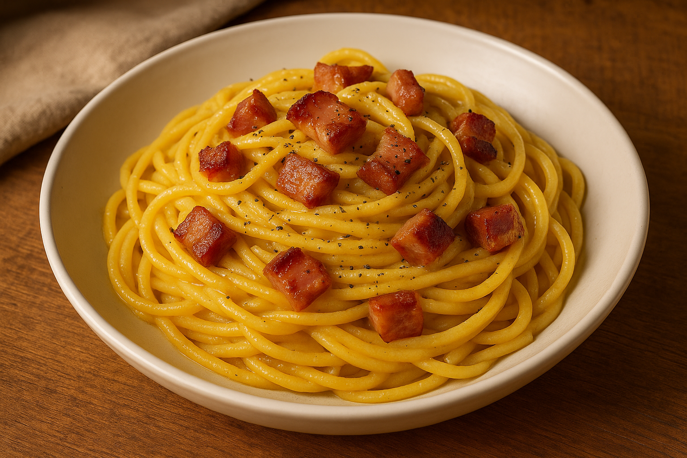

üçù Pasta alla Carbonara

Descrizione
Spaghetti alla Carbonara secondo la tradizione romana, con guanciale, tuorli e Pecorino Romano. Una ricetta semplice, ma ricca di gusto.
Ingredienti (per 4 persone)
- 320 g di spaghetti
- 150 g di guanciale
- 4 tuorli d’uovo
- 100 g di Pecorino Romano grattugiato
- Pepe nero macinato fresco
- Sale q.b.
Procedimento
- Tagliare il guanciale a listarelle o cubetti.
- Rosolare il guanciale in padella fino a renderlo croccante e far sciogliere il grasso.
- In una ciotola, sbattere i tuorli con il Pecorino Romano e una generosa macinata di pepe nero fino a ottenere un composto omogeneo.
- Lessare gli spaghetti in abbondante acqua salata e scolarli al dente, tenendo da parte un po’ di acqua di cottura.
- Versare la pasta nella padella con il guanciale (fuoco spento), mescolare bene e aggiungere il composto di uova e formaggio.
- Mantecare energicamente aggiungendo un po' dell'acqua di cottura per ottenere una consistenza cremosa.
- Servire subito con una spolverata di Pecorino e pepe nero a piacere.
Note e Consigli
- La vera carbonara non prevede panna: la cremosità deriva da uova e formaggio.
- Preferire guanciale a pancetta per un gusto più autentico.
- Usare Pecorino Romano originale per il sapore deciso tipico del piatto.
- Unire le uova a fuoco spento per evitare di strapazzarle.
⬅ Torna alla Home